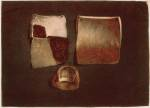
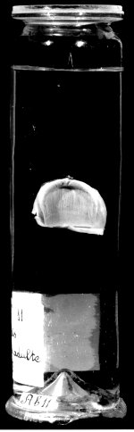

a. Bernard Siegfried Albinus, Dissertatio secunda de sede et caussa
coloris Aethiopum et caeterorum hominum. Accedunt icones coloribus distinctae. Leidae
Batavorum, apud Theodorum Haak; prostant etiam Amstelaedami, apud Jacobum Graal et
Henricum de Leth, 1737. -- (519 D 5:3)
b. Preparaat door Albinus van een duimnagel van een negervrouw. Leiden, circa 1735
-- (Anatomisch Museum)
In het eerste kwart van de achttiende eeuw begonnen kunstenaars te experimenteren met kleurendruk, ook voor afbeeldingen van wetenschappelijk belang. De techniek bestond hoofdzakelijk uit de vervaardiging van drukplaten voor de verschillende kleuren, die na elkaar op het papier werden afgedrukt. De onderlinge vermenging der kleuren die zo plaatsvond, zorgde weer voor nieuwe. De afdrukken konden zeer uiteenlopen, maar het resultaat was vaak van een grote schoonheid.
Jan Ladmiraal (1698-1773) was een van degenen die zich op deze nieuwe kunst toelegde, nadat hij er in Londen bij Jacob Christoph Le Blon mee kennis had gemaakt. In 1736 had hij voor Albinus een plaat verzorgd bij een uiteenzetting over de aders en slagaders in de ingewanden. Dat was hem kennelijk zo goed bevallen dat hij Albinus vroeg of ze samen niet nog zo’n uitgave konden maken. Deze schreef toen speciaal een tweede verhandeling, ditmaal ‘over de zetel en de oorzaak van de kleur der Ethiopiërs [negers] en van de overige mensen’. Albinus beschikte over preparaten van stukjes huid en opperhuid, genomen van een borst van een negerin, en van haar duimnagel en deze beeldde Ladmiral in zijn nieuwe publicatie af. De preparaten zijn bewaard gebleven en die van de nagel wordt hier getoond.
Literatuur
- Otto M. Lilien, Jacob Christoph Le Blon, 1667-1741, inventor of three- and four-colour printing. Stuttgart 1985 (= Bibliothek des Buchwesens. Bd. 9), p. 36, 72.
| vorige pagina | top pagina |